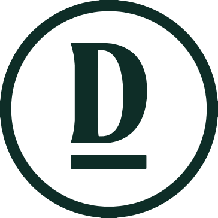
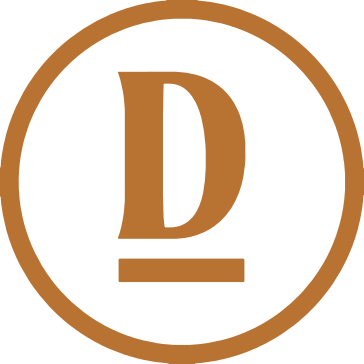
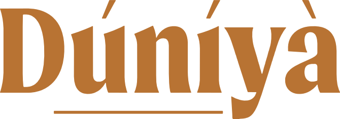
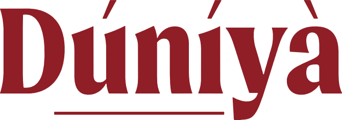

The identity.
How Dúníyà looks and sounds: the marks, colours, typefaces, imagery and voice, with every logo file to download.
Three marks, one house.

The Seal
A single serif D standing on a bar, enclosed by a ring. The bar echoes the underline in the wordmark; the ring holds the whole world in one shape. The first mark people meet: website header, profile pictures, labels, packaging. Centre it where possible.

The Wordmark
Custom lettering with acute and grave accents and a hand-set underline beneath “úníy”. Used where the name must be read: covers, footers, signage, campaign end frames. Never retype it in a font. The y drops below the underline, so allow extra space below.
The Monogram
The D on its bar, without the ring. For the smallest and most physical places: swing tags, woven labels, buttons, embossing, favicons and repeat patterns on tissue and lining.
Four grounds.
Every mark appears in one colour only, on one of four brand grounds: forest on cream; cream on copper; cream on wine; cream or copper on forest.


Give it room.
| Mark | Clear space (x) | Screen | |
|---|---|---|---|
| Seal | Height of the bar under the D, doubled | 24 px | 10 mm |
| Wordmark | Height of the lowercase n | 80 px | 25 mm |
| Monogram | Width of the D’s stem | 16 px | 6 mm |
Never alter the marks.
- Do not stretch or squash
- Do not rotate
- Do not add shadows or effects
- Do not use colours outside the palette
- Do not place copper on wine
- Do not fade or tint the mark
- Never retype the name, outline the marks, or combine them into new lock-ups

Place marks on quiet ground.
Do set the cream Wordmark in the calm, out-of-focus part of the frame, as on the website hero.
Do add a soft forest shade at the edge when the backdrop is lighter.
Don’t place a mark over pattern, faces or busy detail.
Earthy, restrained, warm.
- HEX
- #0E2D27
- RGB
- 14, 45, 39
- CMYK
- 69 0 13 82
Primary. The ground of the house. Deep, quiet and grown.
- HEX
- #F0E2D2
- RGB
- 240, 226, 210
- CMYK
- 0 6 13 6
Primary. Undyed cloth and daylight. The main light ground.
- HEX
- #B87333
- RGB
- 184, 115, 51
- CMYK
- 0 38 72 28
Primary. Warmth and craft. Accents, details and calls to action.
- HEX
- #901E26
- RGB
- 144, 30, 38
- CMYK
- 0 79 74 44
Accent. A rich occasional ground for tags, packaging and campaigns.
Values taken from the master logo sheet. CMYK figures are converted approximations; confirm with a printed proof before production.
Mostly forest and cream. Copper is an accent: never set long text in it on cream. Wine is used sparingly, mostly as a ground for small objects.
Ratios follow WCAG 2.1. Body text needs 4.5 : 1 or more. Copper on wine is decorative only.
A characterful serif, a calm sans.
ABCDEFGHIJKLMNOPQRSTUVWXYZ
abcdefghijklmnopqrstuvwxyz
0123456789 ÚÍÀ úíà
Headlines and large statements. One weight, used with restraint.
ABCDEFGHIJKLMNOPQRSTUVWXYZ
abcdefghijklmnopqrstuvwxyz
0123456789
One or two words inside a headline, quotes, captions with feeling. Never for paragraphs.
ABCDEFGHIJKLMNOPQRSTUVWXYZ
abcdefghijklmnopqrstuvwxyz
0123456789
Body copy in Light, labels in Regular with wide tracking, emphasis in Medium.
All three are free Google Fonts, already used on the website. The logos are artwork and are never set in these fonts.
The whole world.
Made, not merely styled.
Same house. Different expression.
Every Dúníyà piece is made to order to your measurements. Fabric is confirmed with you before anything is made.
Women’s Wear · Platinum Sleeveless Dress
Quiet, earthy, tactile, intentional.
The person exists within the world. Shoot in sequence: walking, stopping, turning, fabric moving, stillness. Viewers should feel they are discovering the clothing, not reading a catalogue.


Copper-brown or cream backdrops. The main Dúníyà world. Intentional, editorial.
Forest, dark brown or charcoal for light garments that need contrast. Natural movement.
Soft grey for product documentation, when switching is easy. Detail.
Four pillars.
- JourneyPaths, distance, arrival
- CreationEarth, growth, making
- CraftThread, seam, hand
- LightWindow light, shadow, dawn
- Words or quotes as the primary artwork
- Faces as the default subject
- Copied tribal or cultural patterns
- Trend graphics
- Aggressive imagery
Cultural expression is used responsibly, through the people who carry it, never as costume.
Clear first. Deep when it matters.
Composed
Short, calm sentences. No hype, no exclamation marks.
Truthful
Say what the garment is made of and how. Never promise what the house cannot deliver.
Warm
Speak to one person. A human from the house answers every message.
Considered
Meaning is carried by the clothing, not explained at length.
| Founder message, The House page | “Worth comes before achievement.” |
| Campaign captions | “Same house. Different expression.” |
| Product descriptions | “A sleeveless dress with a single centre seam.” |
| WhatsApp, customer service | “Thank you. We’ll confirm the details with you before we begin.” |
Use made · made to measure · the house · intentional · carry · encounter · cut · wear · the whole world · dignity · craft
Avoid luxury · drip · slay · must-have · limited time only · exclusive · hottest · trendy · ethnic · tribal print · affordable luxury
Avoid urgency tactics and words that reduce a culture to a style. Write the name DÚNÍYÀ in running text, Dúníyà in the wordmark, never Duniya or DUNIYA.
Every mark, every colour.
Logo pack
Seal, Wordmark and Monogram in Forest, Cream, Copper and Wine. 01 Transparent: SVG, PDF and 2000 px PNG for placing on photos and layouts. 02 On Background: every approved pairing set on its brand colour as SVG, PDF, PNG and JPG, ready for profile pictures, slides and print. Use SVG or PDF wherever possible.



wordmark-copper.svg

wordmark-wine.svgmonogram-forest.svgmonogram-cream.svgmonogram-copper.svgmonogram-wine.svg


Decisions are recorded, not silently changed. Approved: logo system, Seal as primary, four colourways; Forest, Cream and Copper as primary colours. Developed: Wine as accent colour; typefaces as used on the website. Proposed: clear space, minimum sizes, colour proportion; words we use and avoid. Superseded: earlier forest values #0F3D2E and #0F2B25 and cream #F4EDE2, replaced by the logo sheet values.